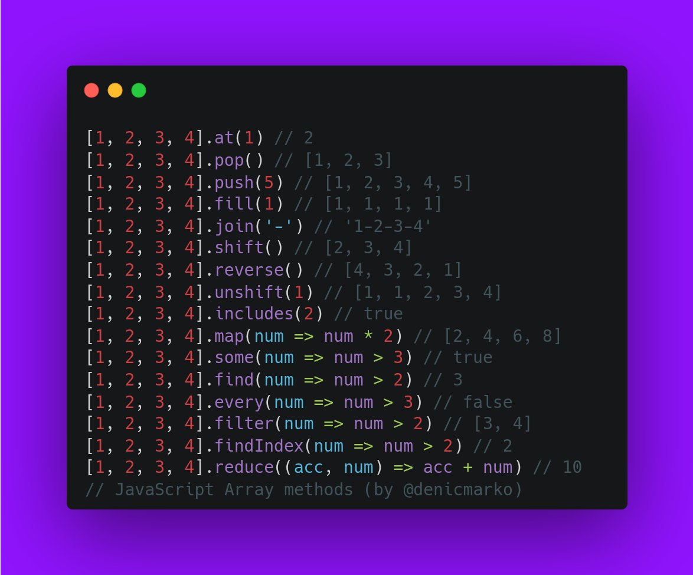

/**
* filter
* https://developer.mozilla.org/ja/docs/Web/JavaScript/Reference/Global_Objects/Array/filter
**/
function isBigEnough(value) {
return value >= 10
}
let filtered = [12, 5, 8, 130, 44].filter(isBigEnough);
console.log( 'filter' );
console.log( filtered );
/**
* find
* https://developer.mozilla.org/ja/docs/Web/JavaScript/Reference/Global_Objects/Array/find
**/
const inventory = [
{name: 'apples', quantity: 2},
{name: 'bananas', quantity: 0},
{name: 'cherries', quantity: 5}
];
function isCherries(fruit) {
return fruit.name === 'cherries';
}
console.log( 'find' );
console.log( inventory.find( isCherries ) );
/**
* findIndex
* https://developer.mozilla.org/ja/docs/Web/JavaScript/Reference/Global_Objects/Array/findIndex
**/
let fruits = ["apple", "banana", "cantaloupe", "blueberries", "grapefruit"];
let index = fruits.findIndex(fruit => fruit === "blueberries");
console.log( 'findIndex' );
console.log( index );
console.log( fruits[index] );
/**
* some
* https://developer.mozilla.org/ja/docs/Web/JavaScript/Reference/Global_Objects/Array/some
**/
function checkAvailability(arr, val) {
return arr.some(arrVal => val === arrVal);
}
console.log( 'some' );
checkAvailability( fruits, 'kela' );
checkAvailability( fruits, 'banana' );
/**
* every
* https://developer.mozilla.org/ja/docs/Web/JavaScript/Reference/Global_Objects/Array/every
**/
function isBigEnough(element, index, array) {
return element >= 10;
}
[12, 5, 8, 130, 44].every(isBigEnough);
[12, 54, 18, 130, 44].every(isBigEnough);
/**
* reverse
**/
console.log( 'reverce' );
const reverses = {0: 1, 1: 2, 2: 3, length: 3};
console.log(reverses);
Array.prototype.reverse.call(reverses);
console.log(reverses);
/**
* shift
* https://developer.mozilla.org/ja/docs/Web/JavaScript/Reference/Global_Objects/Array/shift
**/
var myFish = ['angel', 'clown', 'mandarin', 'surgeon'];
console.log( 'shift' );
console.log('myFish before:', JSON.stringify(myFish));
var shifted = myFish.shift();
console.log('myFish 処理後:', myFish);
console.log('取り除いた要素:', shifted);
/**
* pop
* https://developer.mozilla.org/ja/docs/Web/JavaScript/Reference/Global_Objects/Array/pop
**/
let popped = myFish.pop();
console.log( 'pop' );
console.log(myFish);
console.log(popped);
/**
* push
* https://developer.mozilla.org/ja/docs/Web/JavaScript/Reference/Global_Objects/Array/push
**/
let vegetables = ['parsnip', 'potato']
let moreVegs = ['celery', 'beetroot']
Array.prototype.push.apply(vegetables, moreVegs)
console.log( 'push' );
console.log(vegetables)
/**
* at
* https://developer.mozilla.org/en-US/docs/Web/JavaScript/Reference/Global_Objects/Array/at
**/
const array1 = [5, 12, 8, 130, 44];
let indexat = 4;
console.log( 'at' );
console.log(`Using an index of ${indexat} the item returned is ${array1.at(indexat)}`);
indexat = -2;
console.log(`Using an index of ${indexat} item returned is ${array1.at(indexat)}`);
/**
* fill
* https://developer.mozilla.org/en-US/docs/Web/JavaScript/Reference/Global_Objects/Array/fill
**/
const array_fill = [1, 2, 3, 4];
console.log( 'fill' );
console.log(array_fill.fill(0, 2, 4));
console.log(array_fill.fill(5, 1));
console.log(array_fill.fill(6));
/**
* join
* https://developer.mozilla.org/en-US/docs/Web/JavaScript/Reference/Global_Objects/Array/join
**/
const elements_join = ['Fire', 'Air', 'Water'];
console.log( 'join' );
console.log(elements_join.join());
console.log(elements_join.join(''));
console.log(elements_join.join('-'));
/**
* unshift
* https://developer.mozilla.org/en-US/docs/Web/JavaScript/Reference/Global_Objects/Array/unshift
**/
const array_unshift = [1, 2, 3];
console.log( 'unshift' );
console.log(array_unshift.unshift(4, 5));
console.log(array1);
/**
* includes
* https://developer.mozilla.org/en-US/docs/Web/JavaScript/Reference/Global_Objects/Array/includes
**/
console.log( 'includes' );
const array_includes = [1, 2, 3];
console.log(array_includes.includes(2));
const pets = ['cat', 'dog', 'bat'];
console.log(pets.includes('cat'));
console.log(pets.includes('at'));